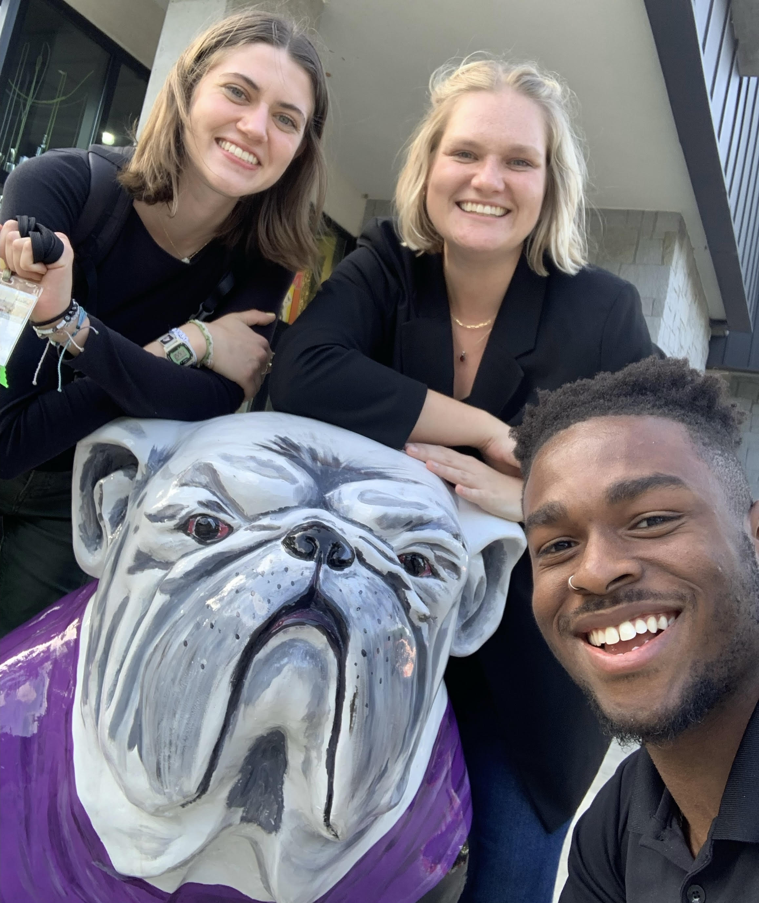
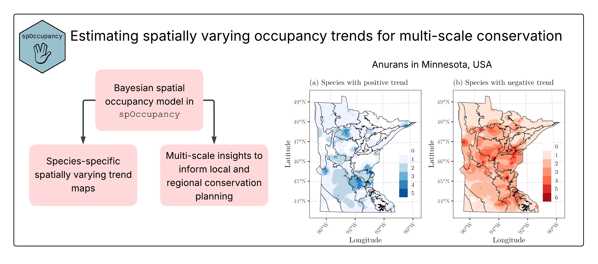
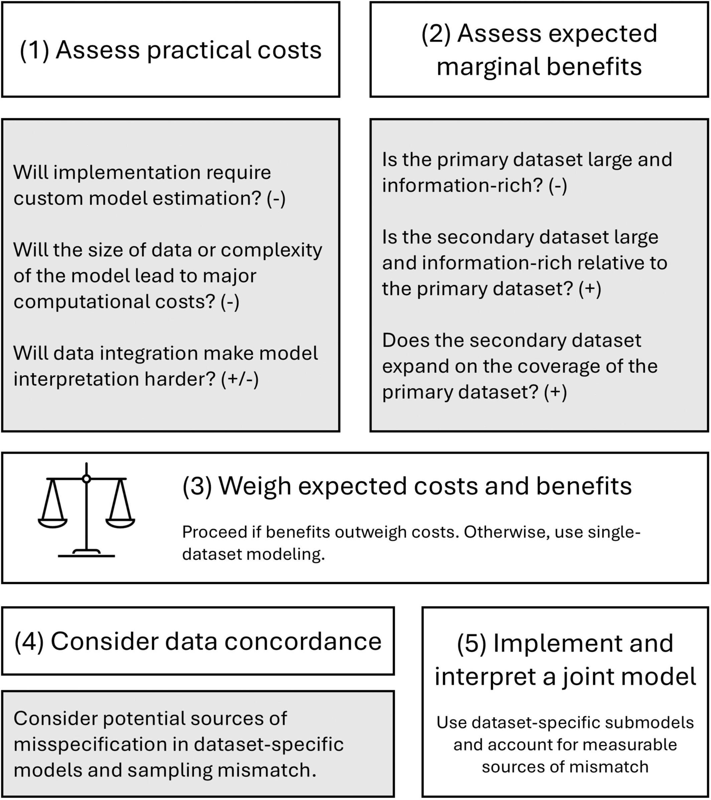
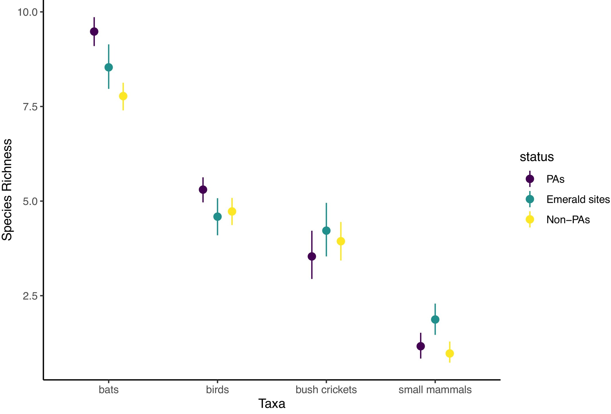
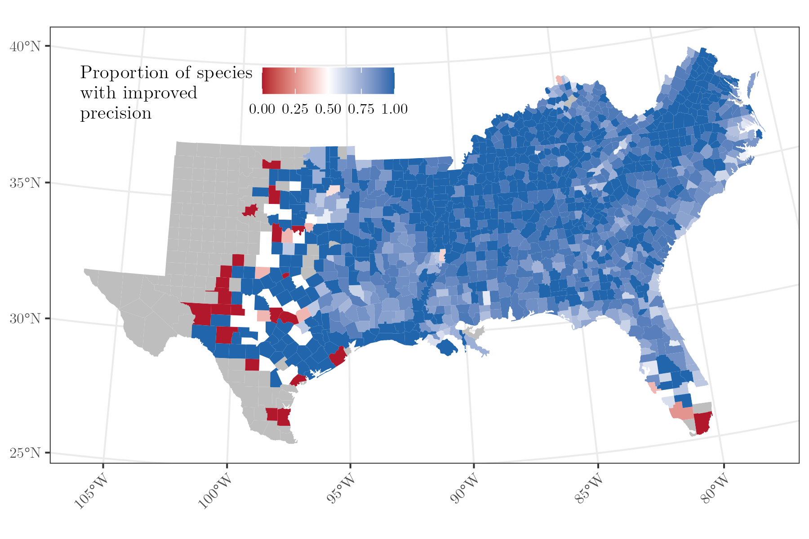
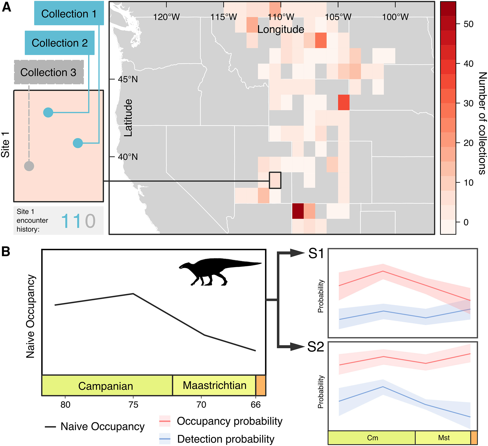
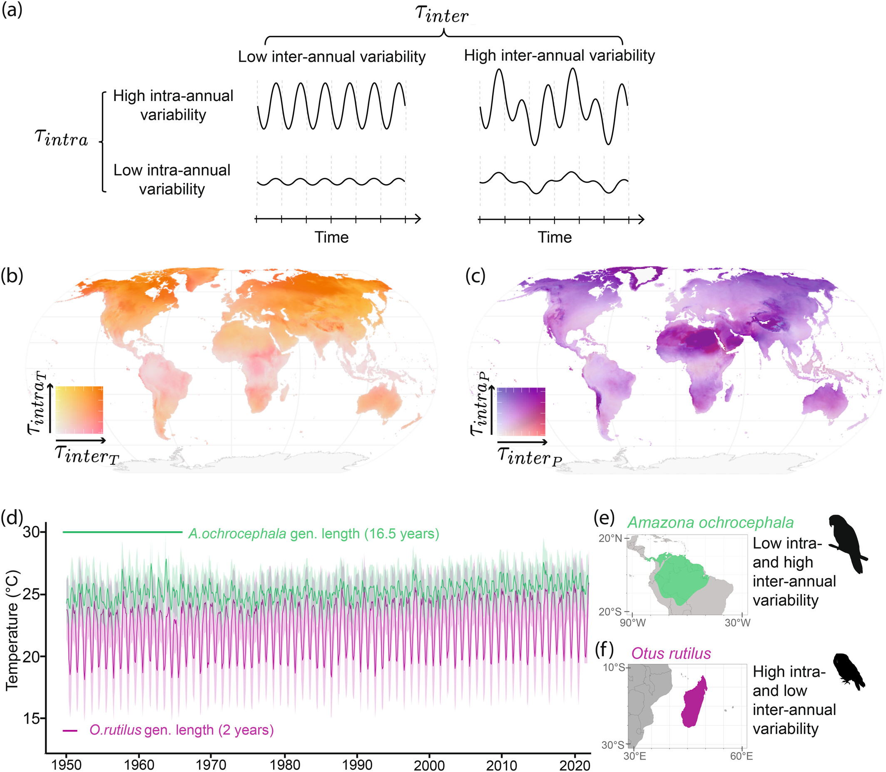
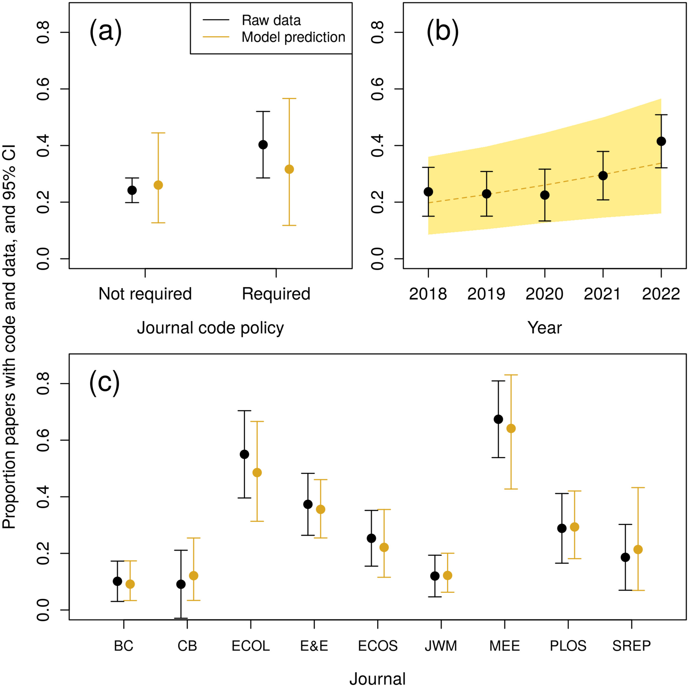
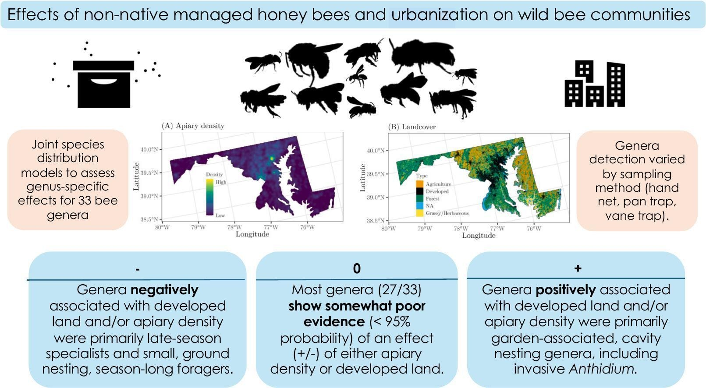

News

SEFS Lab goes to IALE 2026!
April 29, 2026
Alexa, Darius, and Michelle all presented their research at IALE 2026 in Athens, Georgia! Alexa gave a poster on in-progress work exploring forest management and herp communities in the North Carolina Piedmont, while Darius gave a poster on an in-progress project exploring the use of Bayesian statistics in forest growth and yield models. Michelle presented on some ongoing SEFS Lab work exploring spatial variation in oak population dynamics across the eastern US.

New paper in JAE on spatially varying anuran trends
March 26, 2026
Check out our new paper showcasing a new method for estimating spatially varying occupancy trends within spOccupancy. We apply the framework to inform monitoring and conservation assessments of 11 anuran species in Minnesota, USA. See the paper here for more details.

New guidelines paper on data integration
January 28, 2026
A new paper led by Ben Goldstein provides guidance to practitioners on when to use data integration for a species distribution modeling application. We provide a variety of practical considerations for researchers, students, and practitioners to consider the pros and cons of data integration. See the paper here for more details.

New paper on multi-taxa acoustic monitoring
December 1, 2025
Check out our new paper, led by Adham Ashton-Butt at the British Trust for Ornithology, on large-scale multi-taxa passive acoustic monitoring. We explore the potential of PAM for monitoring birds, bats, small mammals, and bush crickets in the Polesia region of Eastern Europe. Our approach provides a roadmap for collecting and processing large-scale, multi-taxa biodiversity data using passive acoustic monitoring. See the paper here for more details.

New paper on small area estimation
December 1, 2025
Check out our new paper on multivariate spatial models for small area estimation of species-specific forest parameters. We apply our modeling framework to estimate species-level biomass for the 20 most common tree species across the Southern US, which resulted in large precision improvements relative to classical approaches. See the paper here for more details.
Alexa Busby and Darius Ledbetter join the SEFS Lab!
August 1, 2025
The SEFS Lab is thrilled to welcome the first two PhD students in the lab: Alexa Busby and Darius Ledbetter. Alexa will be exploring relationships between forest management and understudied wildlife in the southeastern US. Darius will be extending the Forest Vegetation Simulator Southern Variant into a stochastic modeling framework, and applying it to a forest management plan for NC State CNR forest land. Welcome to the lab!
Dr. Michelle Pretorius joins the lab!
June 2, 2025
The Statistical Ecology and Forest Science Lab is excited that Dr. Michelle Pretorius has joined the lab as a Postdoctoral Research Scholar. Michelle will be working with FIA data and applications to inform wildlife and biodiversity conservation. Welcome to Raleigh, Michelle!
New discussion paper on spatial occupancy models
May 16, 2025
We recently wrote a short discussion paper on an exciting new development in spatial occupancy models by Wilson Wright and Mevin Hooten. Find our discussion and the paper by Wright and Hooten here.

New paper published in Current Biology
April 12, 2025
A paper led by Chris Dean at University College London was recently published in Ecology Letters. Using spOccupancy, we applied occupancy models to better understand sampling biases in the dinosaur fossil record. This revealed that apparent declines in dinosaur fossil detections were driven by detection probability while dinosaur occupancy probability generally remained stable during the latest Cretaceous. See the paper here for more details.

New paper published in Ecology Letters
February 25, 2025
A new paper led by Casey Youngflesh at Clemson University was recently published in Ecology Letters on the role of environmental variation in shaping life history of birds across the globe. See the paper here for more details.

New paper published in Ecology
December 19, 2024
A new paper led by Ken Kellner at Michigan State University was recently published in Ecology. We assessed the analytic reproducibility of nearly 500 papers from 2018-2022, finding that only 7% of papers had R code that ran without any errors. We provide some practical recommendations for both authors and journals to consider to improve the reproducibility of code in ecological research. See the paper here for more details.

New paper published in Science of the Total Environment
September 10, 2024
A fun new paper led by Gabriela Quinlan at Penn State University was just published in Science of the Total Environment. Using a dataset from Maryland and joint species distribution models implemented in spAbundance, we provide the largest scale, most phylogenetically resolved assessment of non-native honey bee density effects on wild bee abundance to date. See the paper here for more details.
The Statistical Ecology and Forest Science Lab begins at NC State!
July 25, 2024
I am beyond excited to announce that I will be starting as an Assistant Professor in the Department of Forestry and Environmental Resources at North Carolina State University in Fall 2024! The Statistical Ecology and Forest Science Lab will develop state-of-the-art statistical models and open-source software tools to inform forest and wildlife management and conservation objectives. I will soon be recruiting a graduate student and postdoc to join the lab. Exact research topics will be flexible, but the positions will have a strong quantitative focus on developing new statistical models for forest inventory data and associated applied management questions. More details will be posted in the coming months.